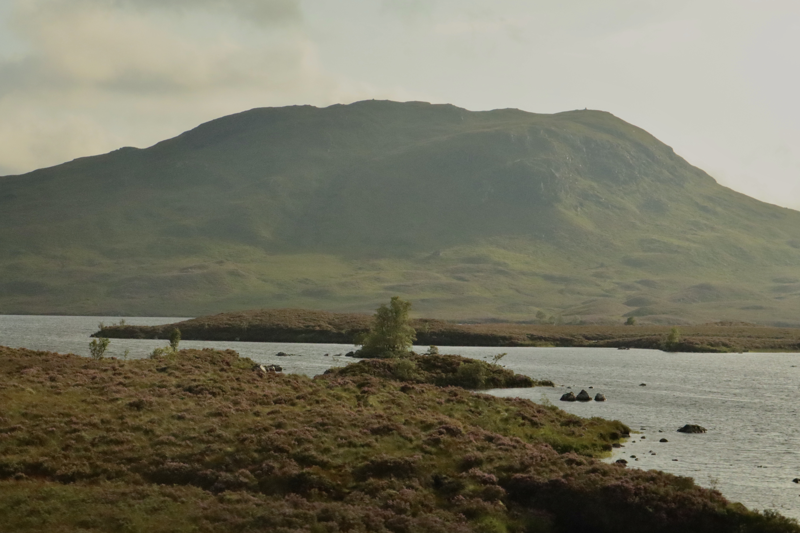

Scottish Highlands
Scottish Highlands are like balls of broccoli. Fuzzy green mountains.
The city center of Scotland, Edinburgh, was a bit boring by day 2. So my co-founders and I booked a 10 hour bus out to the highlands. I never imagined massive grass hills to be so breathtaking. Truly, some of the most stunning scenery and completely worth the fact our bus broke down twice.